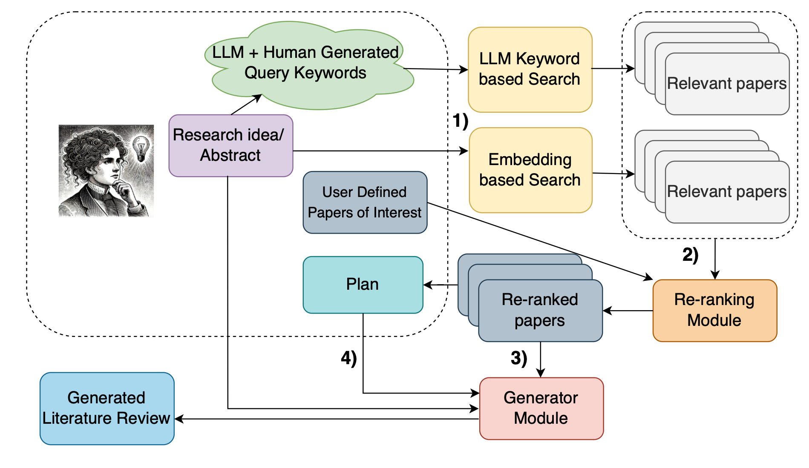
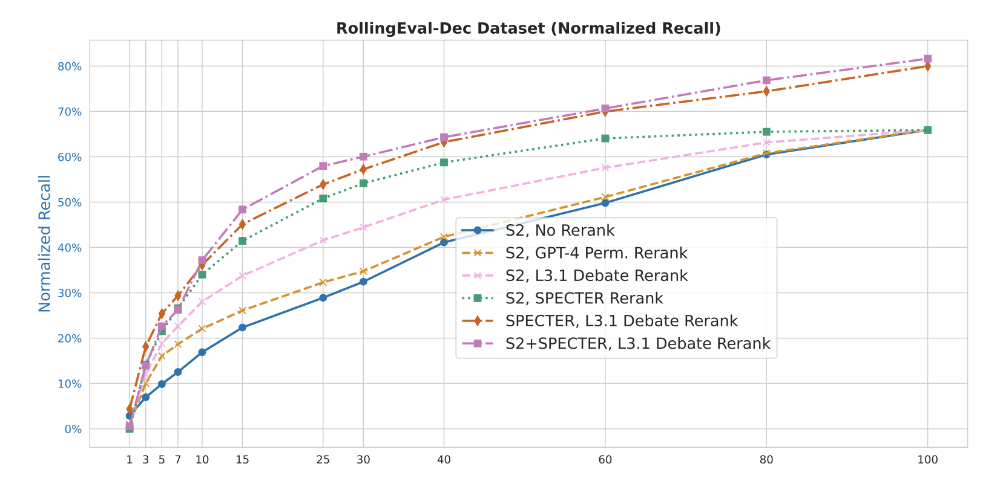
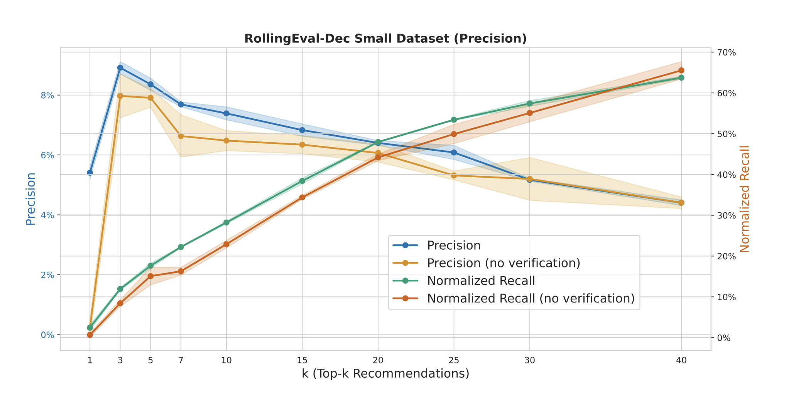
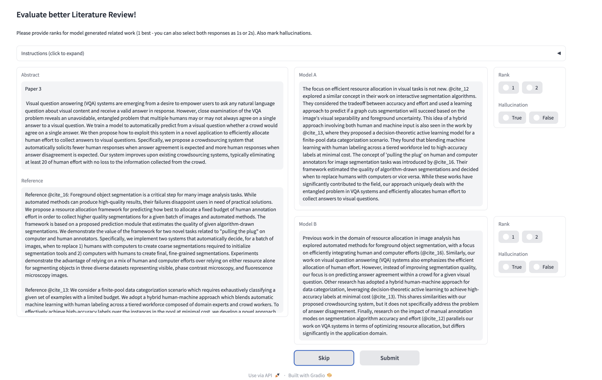
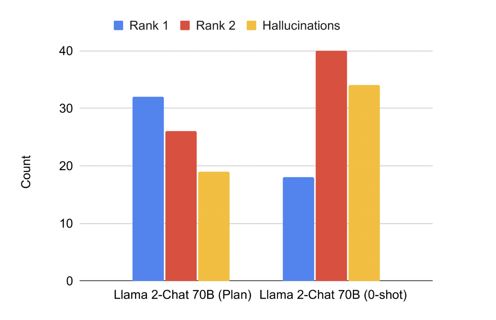
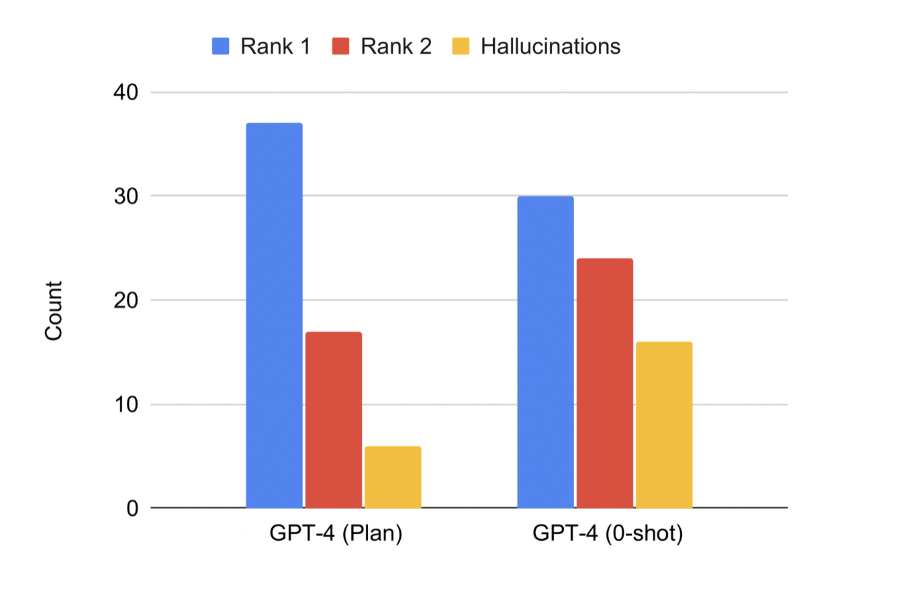
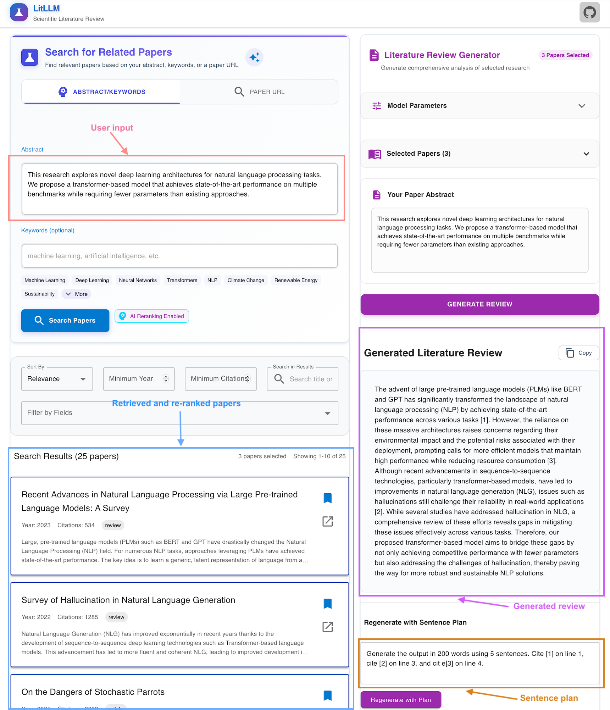

1ServiceNow Research2Mila - Quebec AI Institute3HEC Montreal4University of Waterloo5University of British Columbia6Canada CIFAR AI Chair7Polytechnique Montreal
LitLLM is a powerful AI toolkit that transforms how researchers write literature reviews, using
advanced Retrieval-Augmented Generation (RAG) to create accurate, well-structured related work sections
in seconds rather than days.
Writing comprehensive literature reviews is one of the most time-consuming aspects of academic research,
particularly in rapidly evolving fields like machine learning. As the volume of scientific publications
grows exponentially, researchers face increasing challenges in identifying, synthesizing, and
contextualizing relevant prior work. In this work we explore the potential of Large Language Models (LLMs)
to assist in this critical task, evaluating both their current capabilities and limitations.
Framework Overview

Figure 1: A schematic diagram of our framework, where: 1) Relevant prior work is
retrieved using keyword and
embedding-based search. 2) LLMs re-rank results to find the most relevant prior work. 3) Based on these
papers and
the user abstract or idea summary, an LLM generates a literature review, 4) optionally controlled by a
sentence plan.
Literature reviews are an essential component of scientific research, but they remain time-intensive and
challenging to write. this work explores the
zero-shot abilities of recent Large Language Models (LLMs) for writing of literature
reviews based on an abstract. We decompose the task into two components: (1) Retrieving related works
given a query abstract and (2) Writing a literature review based on the retrieved results.
Background and Context
This research sits at the intersection of scientific writing automation, retrieval-augmented generation
(RAG), and multi-document summarization. We approach the challenge by decomposing the literature review
task into two core components: Retrieval (finding relevant papers given a query abstract)
and Generation (creating a coherent literature review based on the retrieved papers).
This decomposition addresses a fundamental challenge in scientific writing: ensuring that LLM-generated
text is factually accurate, relevant, and properly contextualized. Our work contributes to several
important research areas including LLMs for scientific writing, RAG systems for grounding outputs in
external knowledge, and evaluation protocols for assessing LLM performance on literature review tasks.
Our Approach and Key Findings
We developed a novel interactive pipeline for literature review generation with two main components: a
Retrieval Module that finds relevant papers, and a Generation Module that synthesizes them into a coherent
review. Here we describe our approach and key results.
Retrieval Module
Our retrieval process integrates multiple complementary techniques to maximize the discovery of relevant
papers. We begin with keyword extraction, using LLMs to identify meaningful keywords from
the query abstract. These keywords are then used for search methods that query external
knowledge bases like Google Scholar and Semantic Scholar. We enhance this with embedding-based
search, transforming abstracts into embeddings using SPECTER for similarity comparisons.
Finally, our re-ranking system implements a prompting-based mechanism with
attribution to prioritize the most relevant papers. We evaluated these approaches using
precision (the proportion of retrieved papers that are relevant) and normalized recall (the proportion of
relevant papers retrieved, normalized by the total number of relevant papers). Our results demonstrate
that combining keyword-based and embedding-based search significantly improves performance.

Figure 2: Normalized recall performance of different retrieval strategies showing that
combining keyword-based search, embedding-based search, and reranking with attribution (S2+SPECTER with
L3.1 Debate Rerank) achieves the highest performance.
The verification step in the retrieval process plays an important role in balancing precision and recall:

Figure 3: The effect of removing the referenced content verification step in the debate
ranking strategy. The plots show precision and normalized recall for two variants of the debate ranking
strategy, demonstrating that the verification step is crucial for success.
Generation Module
Once relevant papers are retrieved, our generation module synthesizes them into a coherent literature
review using several innovative approaches. We developed a planning-based approach that
follows a two-step process: first outlining a plan for the review structure, then executing steps in that
plan to create the final text. We tested various prompting strategies including vanilla
zero-shot prompting, plan-based prompting, sentence-by-sentence generation, and per-citation prompting to
understand the optimal generation technique. To evaluate quality, we employed multiple metrics:
ROUGE scores to measure text overlap with reference reviews, BERTScore
for semantic similarity assessment, Llama-3-Eval for LLM-based quality evaluation, and
human expert assessment to identify hallucinations and overall quality. Our findings show
that plan-based approaches consistently outperform vanilla prompting strategies, with GPT-4 achieving the
best results among all tested models.
Model
ROUGE1 ↑
ROUGE2 ↑
ROUGEL↑
BERTScore↑
Llama-3-Eval↑
CodeLlama 34B-Instruct
22.608
5.032
12.553
82.418
66.898
CodeLlama 34B-Instruct (Plan)
27.369
5.829
14.705
83.386
67.362
Llama 2-Chat 7B
23.276
5.104
12.583
82.841
68.689
Llama 2-Chat 13B
23.998
5.472
12.923
82.855
69.237
Llama 2-Chat 70B
23.769
5.619
12.745
82.943
70.980
GPT-3.5-turbo (0-shot)
25.112
6.118
13.171
83.352
72.434
GPT-4 (0-shot)
29.289
6.479
15.048
84.208
72.951
Llama 2-Chat 70B (Plan)
30.919
7.079
15.991
84.392
71.354
GPT-3.5-turbo (Plan)
30.192
7.028
15.551
84.203
72.729
GPT-4 (Plan)
33.044
7.352
17.624
85.151
75.240
Table 1: Zero-shot results on the proposed RollingEval-Aug dataset.
Human Evaluation Findings
The human evaluation component provides crucial insights into the practical utility of these LLM-generated
literature reviews. The figure below shows the instructions provided to experts during annotation:

Figure 4: The human evaluation interface used to compare model outputs and identify
hallucinations.
The results from human evaluation strongly favor plan-based approaches as demonstrated in the figures
below:

Figure 5: Human evaluation results for Llama 2-Chat 70B showing that plan-based generation
receives higher rankings and produces fewer hallucinations.

Figure 6: Human evaluation results for GPT-4 showing similar advantages for plan-based
generation.
Our combined approach shows that plan-based generation with GPT-4 produces the highest quality literature
reviews, while our novel retrieval pipeline with debate-based re-ranking significantly improves the
discovery of relevant papers. This integration of optimized retrieval and structured generation enables
the creation of more accurate, comprehensive literature reviews.
Limitations and Future Work
Despite the promising results, our research faces several key limitations. Retrieval
challenges are significant, as current methods still miss many relevant citations, with
substantial room for improvement in search strategies. Generation hallucinations remain
problematic; while our planning approach reduces them, LLMs still sometimes generate false citations or
misrepresent source materials. Evaluation complexity presents another obstacle, as
assessing literature review quality is inherently subjective and difficult to quantify with automated
metrics alone. Finally, domain specificity is a concern, as our approaches were primarily
tested on machine learning papers, and performance may vary significantly across different scientific
disciplines.
Our future research directions include improving embedding-based retrieval for better coverage of relevant
work, developing more sophisticated querying strategies that better capture semantic relationships between
papers, evaluating the system end-to-end with human researchers in the loop, and extending the approach to
other scientific disciplines beyond machine learning.
Conclusion
The paper "LitLLMS, LLMs for Literature Review: Are we there yet?" provides a comprehensive analysis of
how LLMs can assist in literature review writing. The research demonstrates that while LLMs show
significant promise in this domain, they are not yet ready to fully automate the process. The most
effective approach combines Hybrid retrieval methods integrating keyword and
embedding-based search, Attribution-based re-ranking to prioritize relevant papers, and
Plan-based generation to create structured, coherent literature reviews with fewer
hallucinations.
The ultimate vision is not to replace human researchers but to create interactive systems where LLMs
assist in the most time-consuming aspects of literature review, allowing researchers to focus on
higher-level synthesis and insight generation. This work takes an important step toward that vision by
identifying both the current capabilities and limitations of LLMs for literature review tasks.
LitLLM Interface

Figure 5: LitLLM interface. Our system works on the Retrieval Augmented Generation
(RAG) principle to generate the literature review grounded in retrieved relevant papers. The user needs
to
provide the abstract in the textbox (in purple) and press send to get the generated related work (in
red).
First, the abstract is summarized into keywords, which are used to query a search engine. Retrieved
results
are re-ranked (in blue) using an LLM, which is then used as context to generate the related work. Users
could
also provide a sentence plan (in green) according to their preference to generate a concise, readily
usable
literature review.
The LitLLM Team
LitLLM is developed by researchers at ServiceNow Research and Mila - Quebec AI Institute who are passionate
about improving scientific workflows through advanced AI techniques.
If you find LitLLM useful in your research, please cite both of our papers:
@article{agarwal2024llms,
title={LitLLMs, LLMs for Literature Review: Are we there yet?},
author={Agarwal*, Shubham and Sahu*, Gaurav and Puri*, Abhay and Laradji, Issam H and Dvijotham, Krishnamurthy DJ and Stanley, Jason and Charlin, Laurent and Pal, Christopher},
journal={arXiv preprint arXiv:2412.15249},
year={2024}
}
@article{agarwal2024litllm,
title={Litllm: A toolkit for scientific literature review},
author={Agarwal*, Shubham and Sahu*, Gaurav and Puri*, Abhay and Laradji, Issam H and Dvijotham, Krishnamurthy DJ and Stanley, Jason and Charlin, Laurent and Pal, Christopher},
journal={arXiv preprint arXiv:2402.01788},
year={2024}
}